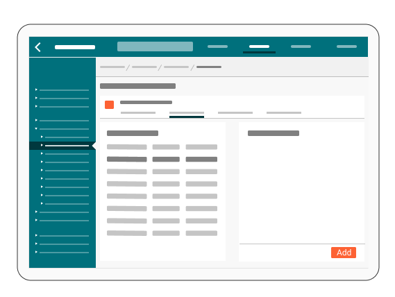
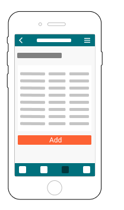

Colours
The aim of this presentation is to clarify our strategy in terms of colour usage within the interface.
See Desktop / Inspiration
Summary of Options
- Separate - Background + Header + Side Menu
- Grey + Black + White = Good + use Card for Content.
- Grey + Black + Black = Good + use Card for Content
- White + Black + Black = A little harsh and less good for mobile
Colour what?
- What you can click - links and table rows
- What we want you to click
- What you have clicked
- Where you are
Approach
- Links = BLUE and table rows = FONT COLOUR
- PRIMARY BUTTON or ACCENT COLOUR (preferred for variation)
- What you have clicked = PRIMARY COLOUR
- Where you are = FONT COLOUR
- unless its exceptually important = ACCENT
Approach
| Thing | Colour | Notes | |
|---|---|---|---|
| Header+side menu | Primary | This can be a range of colours but must retain enough contrast for white | |
| Links | Blue | Compatible version, + Underline or Bold | |
| Lists/Rows | Grey | Background rollover | |
| Click prompt | Primary or Accent? | Depends on Primary, SCSS can manage | |
| Clicked menu | Darker Primary | All selections clear on white or Primary + contrasts white | |
| Clicked tab | Primary | In an effort to make nav selections the same consistant colour - this will work on Primary, White and light grey of canvas | |
| Where u are | Typography | - | |
| Context Banner | Title/Icon in Accent | - |
Teal Example 1
Teal Example 2
Teal Example 3
Not exported yet?
Orange Example 1

Orange Example 2
Orange Example 3

Accessibility & Colour
- Material colours are too heavily linked to Google branding, we shouldn't use them
- The colour chart linked in resources below are probably agnostic enough
- We should create a set of rules to limit useage of whatever colour set we use to prevent some Accessibility issues from the off - identify a palette set for which is contrast friendly
- Material design use a white on Primary and black on Secondary pairing, for now I'm suggesting we always go with white and dark
- Create a set of pairings for Notification Icons - measures off Red v Orange and Up Green V Down Red
- Colours need a back-up of signals for the colour blind - traffic lights most obviously - circle, triangle, octadecimal